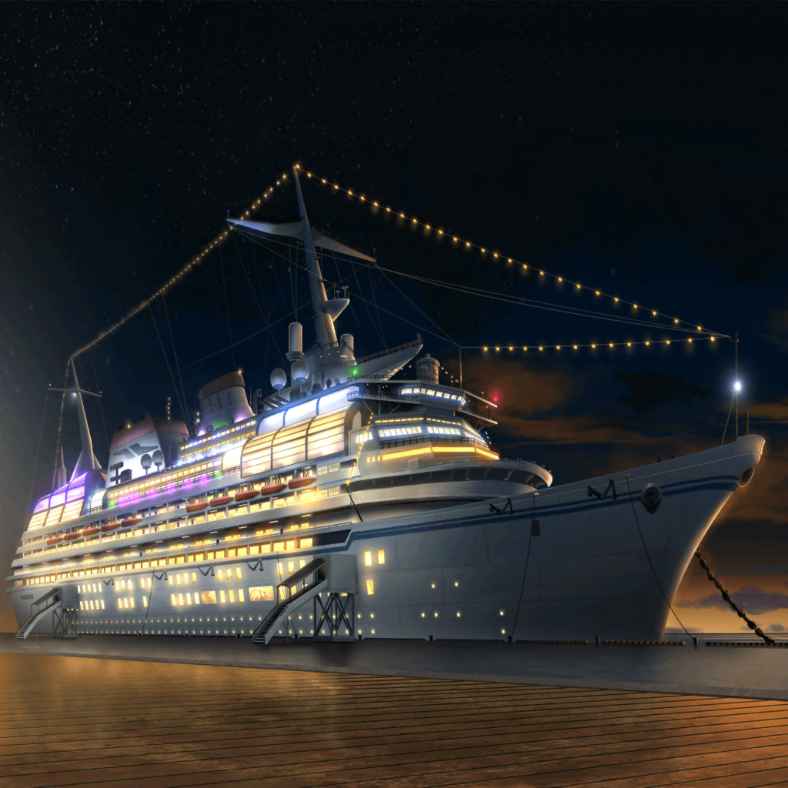

弦巻家
美咲
はいはい、ちゅうもーく。ミッシェル代理こと、奥沢美咲だよー。
次のスタジオ練習の日を決めたいんだけど、みんなこの日はどう？
薫
その日は演劇部の発表会なんだ……
主演の私が出ないわけにはいかないからね。
練習に参加できないな。すまないね、子猫ちゃん
はぐみ
はぐみもこの日はソフトボールの試合があるから、出られないや！
みーくんゴメン！
花音
うーん……
私もこの日はバイトがあるからダメかも……
美咲
やっぱ、全員の都合そろえるの難しいかぁ……
そろそろスタジオで合わせたいけど
はぐみ
そう言えば、前にスタジオ入ってから
しばらく一緒に練習できてないよね
薫
これも運命……。
私たちは今、交わらない糸の上を歩んでいるのかもしれない
薫
あぁ……儚い……
花音
今日ぐらいしか、全員が集まれる日なかったもんね。
どんなに早く集まれるとしても二週間後かぁ……
美咲
まあ、それまでは各自で練習したり、
時間がある人同士で集まって練習するしかないんじゃない？
花音
そうだよね、それがいいかも。
こころちゃん、どうかな？
花音
こころ……ちゃん？
こころ
決めたわ！！！！
花音
ふ、ふええええっ！？
こころ
そうよ、決めたわ！
船に乗りましょう！！
美咲
は？ 答えになってないんだけど……
いきなり何？
こころ
船よ、船。
大きな船がいいわね。みんな、今日はまだ時間あるわよね！？
こころ
こーんなに天気がいいんだもの！
ナイトクルーズにいきましょう！
はぐみ
船！？ こころんサイコー！！
はぐみ乗りたいっ！
薫
心地よい潮風に吹かれ、物思いにふける夜……
うん……悪くない
美咲
いやいやいや、ちょっと待ってって。
今日は次の練習日を決める会議の日でしょ？
それがなんで船……
こころ
だって座って話してるだけなんてつまらないじゃない！
美咲
そもそも楽しむ前提で集まってないから
こころ
せっかくみんなが集まってるんだから、
楽しい方がいいに決まってるわ！
おもしろいことしましょうよ！
はぐみ
うん！
行こー！！
薫
楽しみだよ
花音
ええ……ど、どうしよう、美咲ちゃん
美咲
はぁ、３バカに何を言っても無駄だし……
とりあえずついて行こう
こころ
せっかくならミッシェルもいた方が楽しいわよね！
美咲、ミッシェル連れてきて！
美咲
（いや無理だから……）
美咲
えっと、船の入り口が狭いから
ミッシェルは船には乗れないんだって
こころ
あら、そうなの？
だったらトラックに乗って船に乗ればいいじゃない！
美咲
積み荷かい！ いやそういう問題じゃなくて……
えっと、ミッシェルは揺れるの苦手なんだって！
こころ
あら、そうなの？ 残念だわ、それじゃあ仕方ないわね。
何かギフトに買ってきてあげようかしら
美咲
（助かった……）
謎のスーツの集団
こころ様、お車のご用意はできておりますので
いつでも出発できます
こころ
わかったわ。みんな、行くわよ！
はぐみ、薫
おー！
美咲
やれやれ……
花音
あ、あはは……

３時間後
弦巻家の車内
はぐみ
はぐみ、船に乗るの初めてー！ 楽しみだなっ！
薫
船は良いものだよ。遠くで響く汽笛の音……香る潮風……
ああっ、儚い……
はぐみ
あれ？ こころん、かわいい服着てるー！
いつの間に着替えたの？
こころ
あたし、船に乗るときは、この服を着ることにしてるの！
こころ
ふっふ～ん、ふっふ～ん♪
今日はすっごく楽しいことが起こる予感がするの！
謎のスーツの集団
こころ様、あと５分ほどで到着いたします。
降りるご用意を

港
はぐみ
うっわぁ！
おっきー！！
花音
遠くからもよく見えてたけど、
近くで見るとこんなに大きいんだね……
薫
船に『スマイル号』って書いてあるな
美咲
ええと……。
なんとなく付いてきてなんだけど、ここ……どこ……？
こころ
ここにいつもうちの船を止めてるのよ
美咲
（船って……クルーザーかと思ったら、
めちゃくちゃ大きな客船じゃん……。
相変わらずとんでもない金持ち……）
花音
こころちゃん、今日はどうして船に乗ろうと思ったの？
こころ
もちろん、楽しそうだと思ったからよ！
さ、みんなも乗り込むわよ
美咲
前からだけど、ほんとにこころが何考えてるのかわからないよ
薫
理由なんていらないんだよ。
考えるより感じろ……そういうことさ
はぐみ
はぐみビシビシ感じちゃうよ！
船、乗りたいもん！
こころ
その意気よ、はぐみ！
ビシビシ感じて船に乗っちゃってちょうだい！
はぐみ
やった～！
はぐみがいっちばーん
花音
美咲ちゃん、私達も乗ろう
美咲
さて、いきますかー
薫
みんな乗ったかな？
それじゃあ私も……
謎のスーツの集団
薫様、お待ちください
薫
ん？
どうしたんだい？
謎のスーツの集団
実は……。
……で……ということでありまして
薫
なるほど、そういうことならわかったよ。
私に任せておいてくれ